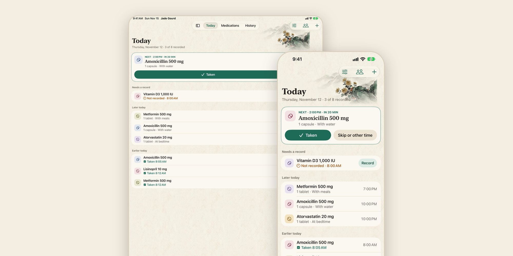
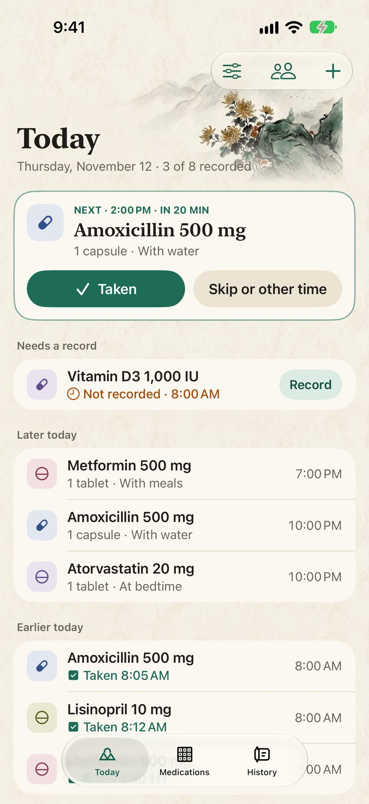
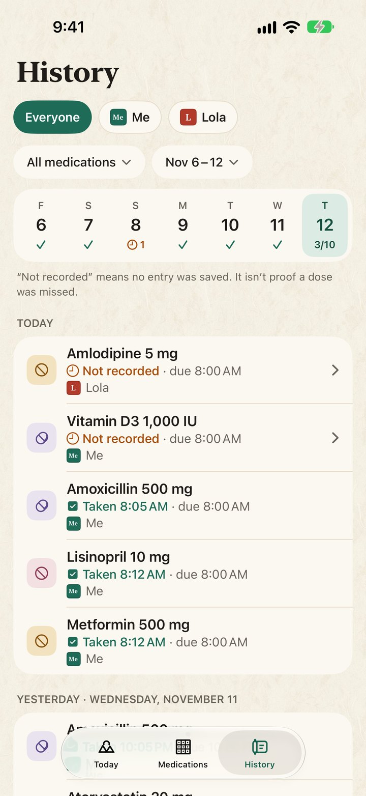
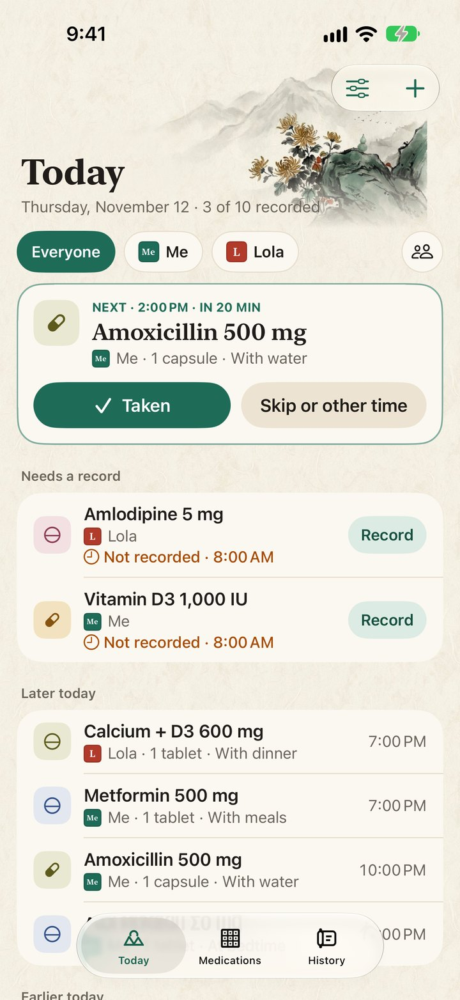
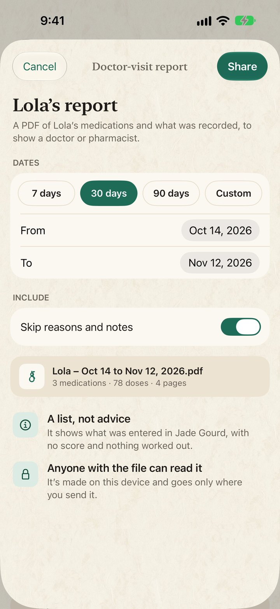
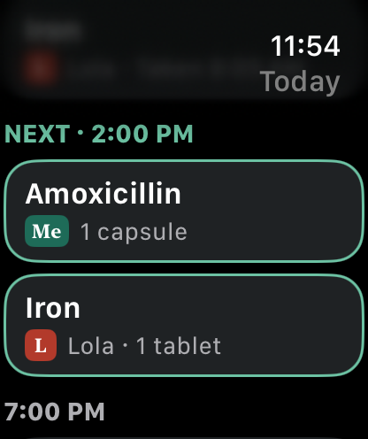
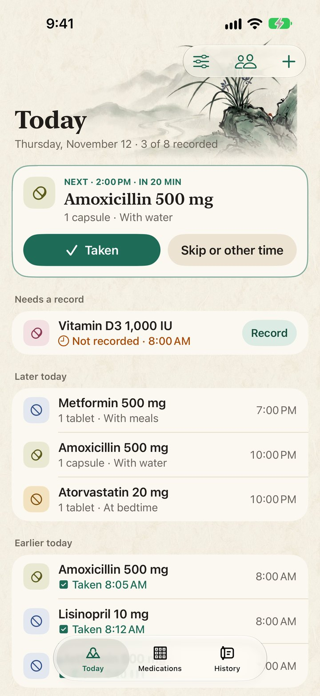

Jade Gourd
Jade Gourd
Every dose, on time and on record.
Jade Gourd reminds you of every medication and keeps a record you can show, for you and the people you look after. Free, private, and with no account.
For iPhone, iPad, Mac and Apple Watch, on the App Store.

Reminders you can count on.
A reminder at every dose time, and another if the dose isn't recorded. For the medications that matter most, an alarm that rings through Silent mode.
Stopping an alarm never counts as taking the dose. You record what you took.

Taken or skipped, in one tap.
Record a dose on iPhone, iPad or Apple Watch. Took it earlier? Pick the time. Skipped it? Say why, if you like.
Each dose shows once, whichever device recorded it, and History keeps every dose, with corrections shown.

For the people you look after.
Keep a parent's or child's medications next to your own, each with their own seal. Today shows everyone's doses, or one person's at a time.
Send a copy of someone's medications with AirDrop, Messages or Mail, so another carer can set them up in a moment.

Ready for the doctor's visit.
A report of a person's medications and what was recorded, over the days you choose, as a PDF to show or print. Insights show what was recorded and when, never a score.
Export every record as a spreadsheet whenever you like.

Private by design.
- No account, no ads, no analytics and no tracking.
- Your records stay on your devices and sync through your own iCloud. Names and notes are encrypted.
- Delete all data removes everything, on your devices and in iCloud.

A quiet place to look at.
An ink-wash painting sits at the top of Today: misty mountains, or one for each season that changes as the year turns. Plum blossom, orchid, bamboo and chrysanthemum move gently, and stand still with Reduce Motion.

- Free, with no subscription
- No account needed
- No ads or tracking
- Widgets and Apple Watch
- iPhone, iPad and Mac
Jade Gourd records what you enter. It doesn't suggest, calculate or check doses, and it isn't a medical device. Ask your doctor or pharmacist about your medications.